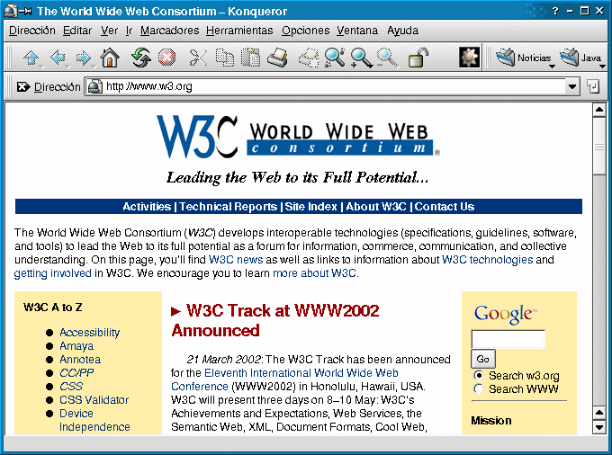
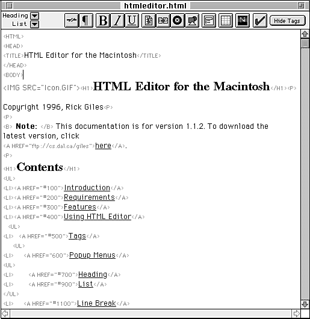
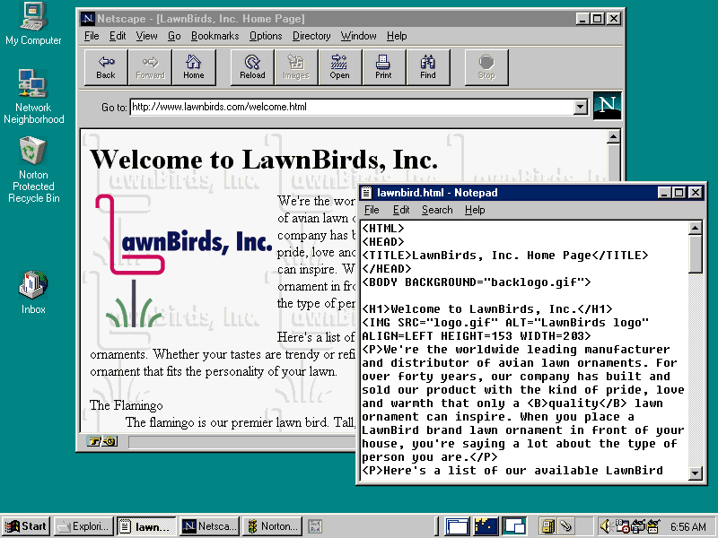
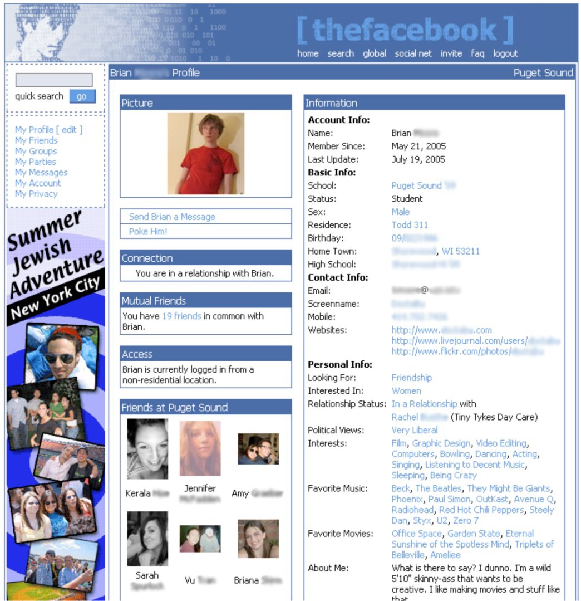
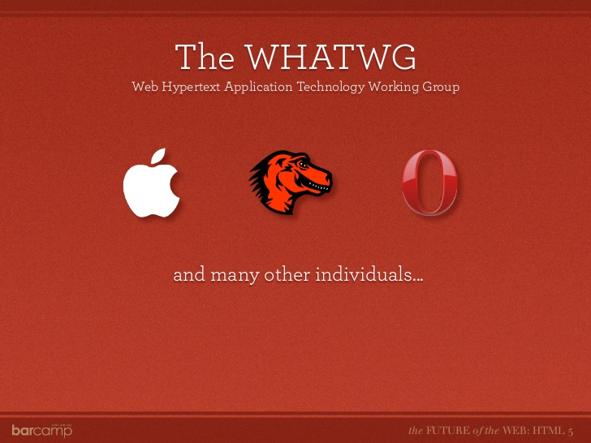
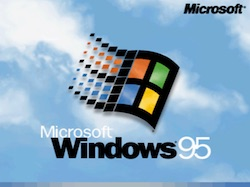
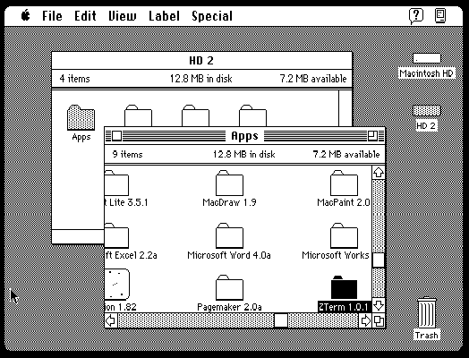
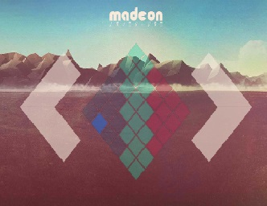
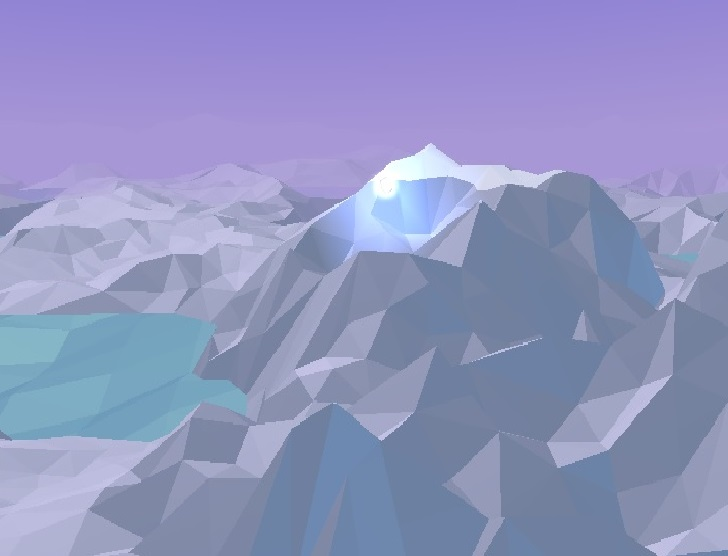
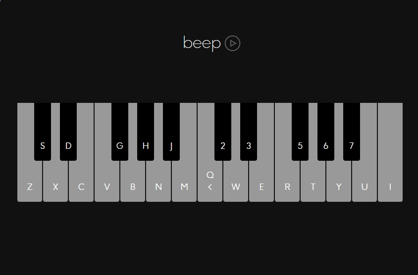

LA EVOLUCIÓN ES LO MÁS ESENCIAL
CAMBIOS HTML
W3C se ha encargado, desde su creación, estandarizar y evolucionar al lenguaje HTML, ya que, con el avance tecnológico, es posible incorporar
nuevas herramientas que generen páginas webs más dinámicas y seguras. Antes de su creación, existían dos métodos para vincular documentos electrónicos,
por un lado, los hiperlinks y por otro lado, el lenguaje de etiquetas SGML, un descendiente del lenguaje marcado generalizado de IBM (GML),
desarrollado en 1960 por Charles Goldfarb, Edward Mosher y Raymond Lorie.

Página Web de Inicio del W3C en el Navegador Konkeror
Berners-Lee escribió en 1991 la primera versión del HTML, donde él lo consideraba como una ampliación del lenguaje SGML. Pero con el paso del tiempo,
se convirtió en algo sumamente más valioso. Para 1993 comenzaron los trabajos de evolucionar al HTML, donde se diseño una segunda versión denominada
HTML+. Esta versión es considerada la primera versión oficial del HTML, formalizando a todas las anteriores dentro de esta.

Primera versión del HTML
Cuando recién se había consolidado el W3C en el MIT para marzo de 1995 , se propuso el estándar HTML 3.0, donde se introducían nuevas capacidades
como crear tablas con facilidad, incorporar texto en las imágenes y mostrar elementos matemáticos complejos. La enorme desventaja fue que era
demasiado complejo para ser utilizado con la tecnología de la época. El HTML 3.1 nunca llegó a ser propuesto oficialmente, pero el HTML 3.2 si
logró su desarrollo, adoptando elementos creados por los navegadores Netscape y Mosaic, pero dejando de un lado los elementos propuestos para
HTML 3.0. A pesar de ello, la posibilidad de trabajar con fórmulas matemáticas de la v3.0 se consolidó como un estándar independiente llamado MathML.

Versión 3.2 del HTML, donde se incrementó el diseño de las páginas web
En 1997, la W3C publica la HTML 4.0 como una actualización al lenguaje, donde se le incorporan más elementos y recursos para mejorar la
visualización del texto de la página web, como colores, alineación, fuentes, gráficos, etc. Añade atributos que favorecen a la accesibilidad,
así como atributos para mejorar las tablas y encabezados. También W3C dio a conocer las bases para lo que sería HTML 5, pero detuvieron su
progreso para favorecer al desarrollo del XML.

Página de Perfil de Facebook en 2005 desarrollada en HTML 4.2
Pero debido al rumbo que estaba tomando W3C con el XHTML, la falta de interés por el desarrollo del HTML y el aparente desprecio por las
necesidades de los desarrolladores web del mundo real, las compañías Apple, Fundación Mozilla y Opera Software se unieron en 2004 para crear
una comunidad de personas con el interés de evolucionar la web, nombrándose Web Hypertext Application Technology Working Group (WHATWG).

Logotipos de las Compañias que crearon WHATWG
Esto originó que en 2006, la W3C se interesara en el desarrollo de la HTML5, y en 2007 se unió a WHATWG para unificar al proyecto.
Todo esto originó que el HTML5 generara aplicaciones online que antes no podían ser creadas, ya que incorporó etiquetas de procesamiento
de audio y video, al igual que modelado en 2D y 3D. También la incorporación de grandes conjuntos de datos, tablas dinámicas, mejora en
los formularios, visores MathML y SVG, así como la función Drag&Drop que permite arrastrar objetos desde los archivos del usuario hacia el navegador web.

Se creó un logotipo específico para el HTML5 con el fin de demostrar la nueva era de la web
El HTML5 renovó todo el concepto que significa una página web. Debajo se encuentra una lista de ejemplos de las posibilidades que creó el HTML5.
Desde ejecutar sistemas operativos antiguos, como páginas para dibujar o editores de texto.





Investigado y Programado por: Joel Alfonso Álvarez del Castillo Romo